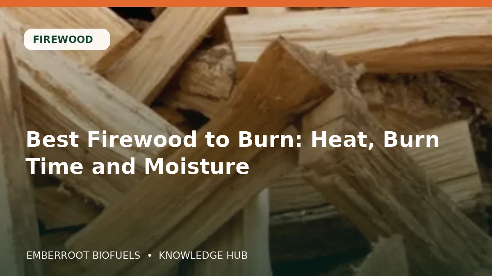

22IUNLemn de foc
Cel mai bun lemn de foc: căldură, durată și umiditate
Ghid practic despre lemn de foc, cu specificații, performanță, depozitare și verificări pentru „Cel mai bun lemn de foc: căldură, durată și umiditate”.
Citește articolul